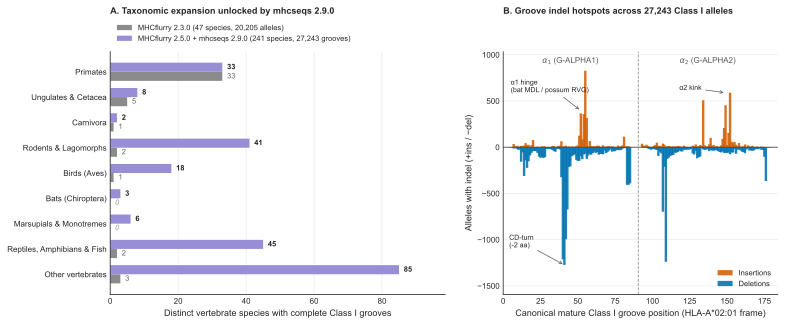
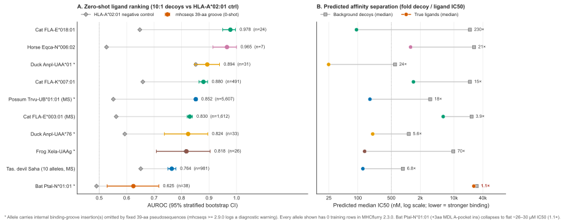
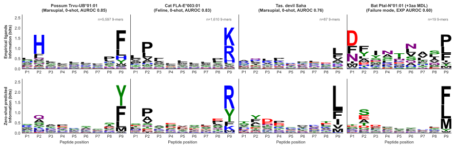
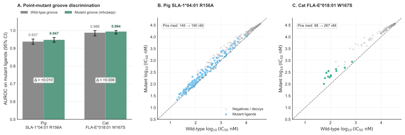
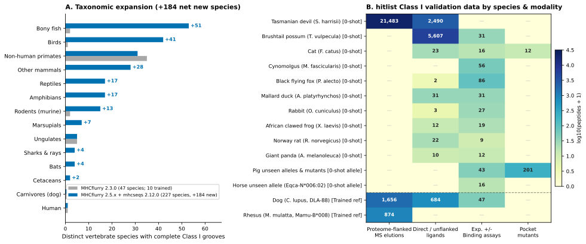
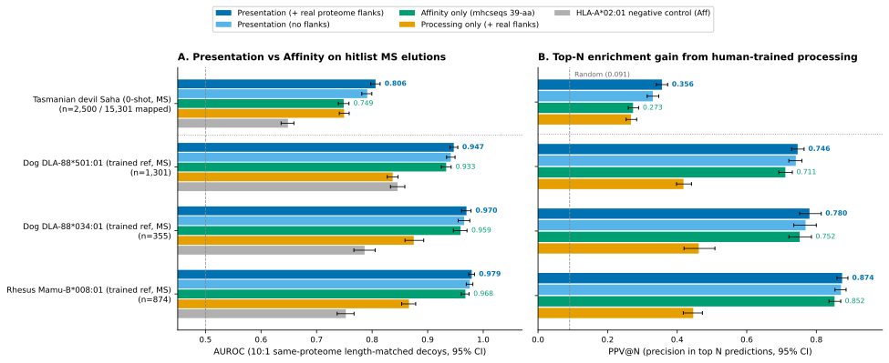

Cross-species alleles, pseudosequences, and zero-shot validation
MHCflurry 2.5.0 integrates optional mhcseqs
support to extract Class I binding-groove pseudosequences directly from any
MHC Class I heavy-chain protein sequence — without external clustalo or
Biopython binaries. Existing 2.3.0 model weights and predictions on
previously supported alleles remain unchanged.
Install the optional mhcseqs extra to enable raw sequence decomposition and
full-database extension:
pip install "mhcflurry[mhcseqs]>=2.5,<2.6"
Predicting on new species or binding-pocket mutants
Register a novel allele or engineered binding-pocket mutant on any loaded pan-allele predictor at runtime:
from mhcflurry import Class1AffinityPredictor
predictor = Class1AffinityPredictor.load()
# Register a novel heavy-chain sequence (signal peptide stripped automatically)
predictor.add_allele_from_sequence("FLA-E*003:01", cat_heavy_chain_seq)
predictor.predict(["APRGPGRAF"], allele="FLA-E*003:01")
# Evaluate a mature-numbered binding-pocket point mutant
predictor.add_allele_from_sequence(
"FLA-E*018:01_W167S",
cat_e018_seq,
mutations=("W167S",),
)
# Strictly generalize all supported alleles from mhcseqs (preserving existing
# 2.3.0 non-X pseudosequences verbatim by default)
predictor.extend_alleles_from_mhcseqs(prefer_existing=True)
From the command line:
mhcflurry pseudosequences extract --sequence "$SEQ" --allele "FLA-E*018:01" --mutation W167S
mhcflurry pseudosequences build --existing-csv allele_sequences.csv --prefer-existing --out extended.csv
When mhcseqs >= 2.9.0 is installed, MHCflurry delegates binding-groove
alignment to mhcseqs.align_domain_to_imgt / mhcseqs.align_groove_to_imgt
and logs a warning whenever a groove contains internal insertions omitted by
fixed 39-aa pseudosequences or when a requested point mutation does not alter
any of the 39 extracted positions. Call
mhcflurry.pseudosequences.extract_class1_pseudosequence_with_alignment(...)
to inspect the structured GrooveAlignment object directly.
Taxonomic expansion and groove-indel landscape
Across the 19,886 non-X overlapping Class I alleles in MHCflurry 2.3.0’s
legacy allele_sequences.csv, mhcseqs 2.9.0 IMGT extraction achieves
99.45% exact 39-for-39 match (19,777 / 19,886) and 99.98% per-residue
identity (775,385 / 775,554) while expanding complete Class I groove coverage
from 47 species (20,205 alleles) in 2.3.0 to 241 distinct vertebrate
species (27,243 complete Class I grooves) in mhcseqs 2.9.0.

Left: distinct vertebrate species with complete Class I grooves in MHCflurry 2.3.0 versus MHCflurry 2.5.0 + mhcseqs 2.9.0. Right: IMGT-aligned insertion and deletion counts by canonical mature Class I position across all 27,243 complete grooves in mhcseqs 2.9.0.
Non-canonical insertions and deletions cluster into six recurring structural
loops rather than occurring uniformly across the groove: the α1 CD-turn
(positions 39–42, -2 aa in birds and frogs), the α1 N-helix hinge (positions
51–58, +1 to +3 aa in bats and marsupials), the α2 AB-turn (positions
103–109, -1 to -2 aa), and the α2 helix kink (positions 145–155, +1 to
+2 aa).
Zero-shot cross-species generalization of frozen 2.3.0 weights
To test how well MHCflurry’s existing pan-allele 2.3.0 weights generalize to
previously unsupported species and clades (0 training rows in 2.3.0) using
mhcseqs 2.9.0 39-aa pseudosequences, we evaluated frozen 2.3.0 pan-allele
affinity ensembles against monoallelic mass-spectrometry ligands, multi-allelic
MS elutions, and IEDB binding assays across marsupials (~160 Myr diverged from
placentals), felines, birds (~310 Myr diverged), equines, amphibians (~350 Myr
diverged), and bats.
For every ligand set, we paired true ligands against 10:1 length-matched
background decoys (seed 42) and also scored the identical peptides with an
unrelated human negative control (HLA-A*02:01) to separate genuine
groove-specific recognition from peptide-composition bias.

Zero-shot generalization of frozen MHCflurry 2.3.0 weights using mhcseqs-extracted 39-aa grooves (every allele has 0 training rows in 2.3.0). Left: AUROC with 95% stratified bootstrap CI compared to an HLA-A*02:01 negative control on identical peptides. Right: median predicted IC50 (nM) for true ligands versus length-matched background decoys.
Allele (clade) |
Positive ligands |
Groove alignment ( |
Zero-shot AUROC (95% CI) |
|
PPV@N |
Median IC50 pos / dec (nM) |
|---|---|---|---|---|---|---|
Cat |
24 |
canonical |
0.978 [0.950, 0.996] |
0.648 |
0.833 |
94 / 21,630 (230×) |
Horse |
7 |
canonical |
0.965 [0.914, 1.000] |
0.527 |
0.714 |
1,258 / 26,389 (21×) |
Duck |
31 |
|
0.894 [0.847, 0.938] |
0.852 |
0.387 |
25 / 600 (24×) |
Cat |
491 |
canonical |
0.880 [0.863, 0.895] |
0.659 |
0.464 |
1,440 / 21,670 (15×) |
Possum |
5,607 |
|
0.852 [0.847, 0.857] |
0.551 |
0.409 |
164 / 2,958 (18×) |
Cat |
1,612 |
canonical |
0.830 [0.821, 0.839] |
0.562 |
0.372 |
6,004 / 23,365 (3.9×) |
Duck |
33 |
|
0.824 [0.737, 0.896] |
0.593 |
0.394 |
183 / 1,032 (5.6×) |
Frog |
26 |
|
0.818 [0.708, 0.904] |
0.815 |
0.538 |
139 / 9,733 (70×) |
Tas. devil |
981 |
multi-allelic UniProt grooves |
0.764 [0.750, 0.779] |
0.651 |
0.317 |
124 / 847 (6.8×) |
Bat |
38 |
|
0.625 [0.529, 0.717] |
0.490 |
0.184 |
26,031 / 28,998 (1.1×) |
On experimental positive-versus-negative binding assays (no synthetic decoys)
with at least 10 positives and 10 negatives, Cat FLA-E*018:01 achieves
AUROC 0.684 (24+ / 12−, median predicted IC50 94 vs 383 nM, vs HLA-A*02:01
control 0.417), whereas Bat Ptal-N*01:01 achieves AUROC 0.599 (38+ / 32−,
median IC50 26,031 vs 29,560 nM).
Zero-shot motif recovery and insertion failure mode
Comparing empirical 9-mer MS ligands against the top 1% of 30,000 random 9-mers
scored zero-shot by frozen 2.3.0 weights shows both why transfer works and
where fixed-length pseudosequences reach their structural limit:

Empirical 9-mer ligands (top row) compared against the top 1% zero-shot predicted 9-mers from 30,000 random background peptides (bottom row).
Cat
FLA-E*003:01(canonical groove, n = 1,610 9-mers): zero-shot predictions recover both the P2-Pro and P9-Arg/Lys anchor preferences without any feline training data.Brushtail possum
Trvu-UB*01:01(n = 5,597 9-mers) and Tasmanian devilSaha: despite ~160 Myr of divergence and zero marsupial training data, frozen2.3.0weights recover the aromatic/hydrophobic P9 anchor chemistry and achieve AUROC 0.852 (vs 0.551 forHLA-A*02:01).Bat
Ptal-N*01:01(honest failure mode):Ptal-N*01:01carries a 3-aaMDLinsertion at mature position 51 that remodels the A-pocket (driving a strong empirical P1-Asp and P9-Pro preference) together with a rareY171Hsubstitution. Because a fixed 39-aa pseudosequence omits theMDLinsertion and2.3.0has zero bat training data, predicted affinities collapse to flat ~26–30 µM IC50s (1.1× separation).mhcseqs >= 2.9.0explicitly flags these insertions vialogging.warning.Amphibian
Xela-UAAgand DuckAnpl-UAA*01caveat: onXela-UAAg(carrying both+1 aa Kand+2 aa NApocket insertions), the target groove AUROC (0.818) matches theHLA-A*02:01negative control (0.815), indicating that ranking performance on those 26 peptides reflects shared hydrophobic composition rather than frog-specific groove accuracy. Always inspect the negative control and alignment warnings when predicting on deeply diverged clades.
Binding-pocket point-mutant sensitivity
Using mhcseqs mature-numbered mutations=..., single-residue binding-pocket
substitutions improve discrimination over the corresponding wild-type grooves
on mutant-specific IEDB ligands:

Single-residue binding-pocket substitutions extracted via mhcseqs mutations=(…) outperform their wild-type grooves on mutant-specific ligands for both Pig SLA-104:01 R156A (ΔAUROC = +0.010, 95% paired CI [+0.007, +0.013]) and Cat FLA-E018:01 W167S (ΔAUROC = +0.006, 95% paired CI [+0.000, +0.015]).
Zero-shot Presentation with real proteome flanks (hitlist validation)
Beyond affinity-only ligand ranking, MHCflurry 2.5.x also supports zero-shot
Class I Presentation (Class1PresentationPredictor, combining pan-allele
affinity with MHCflurry’s human-trained antigen-processing model) on previously
unseen vertebrate species. Evaluating frozen 2.3.0 weights against
hitlist Class I MS immunopeptidomics,
direct ligands, and experimental +/- binding assays across 11 unseen
vertebrate species (+184 net new vertebrate species in mhcseqs 2.12.x vs
2.3.0) demonstrates that antigen processing and real species proteome flanks
transfer even across ~160 Myr of divergence to marsupials:

Left: distinct vertebrate species with complete Class I grooves by clade (+184 net new species vs MHCflurry 2.3.0). Right: hitlist Class I validation data availability across unseen vertebrate species, unseen alleles/mutants, and trained reference controls by experimental modality.

Zero-shot Presentation with real proteome flanks versus Affinity on hitlist MS elutions (10:1 same-proteome length-matched decoys, 95% bootstrap CI). On Tasmanian devil (Sarcophilus harrisii, 0 training rows, 15,301 proteome-mapped ligands), adding MHCflurry’s human-trained processing model and real marsupial flanks lifts AUROC from 0.749 to 0.806 (+0.057) and PPV@N from 0.273 to 0.356 (+30% relative enrichment).

Left: experimental positive-versus-negative binding assays (no synthetic decoys) from hitlist/binding.parquet. Right: zero-shot Affinity (solid) and no-flank Presentation (hatched) ligand ranking AUROC against 10:1 length-matched background decoys across 11 unseen vertebrate species and 3 engineered binding-pocket mutants.
Pan-allele training parity & GENERATE.sh migration
Auditing all 307 trained alleles in curated_training_data.csv.bz2
(988,285 rows) against mhcseqs 2.12 shows 300 / 307 are already
bit-for-bit identical (39/39 residues), while 7 / 307 chicken Gaga-BF1/BF2
alleles had an X in 2.3.0 that mhcseqs resolves. In a controlled A/B
pan-allele training run ([1024, 1024] architecture, all 307 trained alleles,
30,760 train / 7,690 held-out test, seed 42), locking existing alleles verbatim
via --lock-existing reproduces legacy clustalo training bit-for-bit
(Max abs diff = 0.0, log10 Pearson r = 1.000000, AUROC = 0.80169 on both
arms) while adding all +184 new vertebrate species.
Accordingly, downloads-generation/allele_sequences/GENERATE.sh now defaults
to MHCFLURRY_ALLELE_SEQUENCES_BACKEND=mhcseqs, running
mhcflurry pseudosequences build --existing-csv ... --lock-existing followed
by verify_trained_allele_parity.py to enforce 0 missing alleles and 0
character diffs on every trained allele in curated_training_data.csv.bz2.
Pass MHCFLURRY_ALLELE_SEQUENCES_BACKEND=legacy to run the original
wget + clustalo + make_allele_sequences.py workflow.
For the full dated experiment write-ups—including the 16-cohort
groove-specificity synthesis figure, complete results tables, upstream
nomenclature unification (mhcgnomes.AccessionedAllele across 230+ vertebrate
species in mhcflurry >= 2.5.9), and our speculative zero-shot Class I →
Class II pan-class experiment against NetMHCIIpan-4.3—see
Experiment 2026-11-25: Cross-species hitlist validation & mhcseqs training parity and
Experiment 2026-11-25: Speculative pan-class Class I → Class II transfer via mhcseqs IMGT alignments in the Experiment log log.
Reproducing the benchmark and figures
The complete evaluation and plotting pipeline lives in
scripts/benchmark_cross_species_mhcseqs.py:
python scripts/benchmark_cross_species_mhcseqs.py --collect --plot --out-dir ./cross_species_250
It uses frozen MHCflurry 2.3.0 weights (models_class1_presentation),
mhcseqs 2.9.0 (mhc-full-seqs.csv), PDB heavy chains 6A2B (Xela-UAAg)
and 4ZUU (Eqca-N*006:02), curated_training_data.csv.bz2 (to enforce zero
training overlap), and live IEDB Class I queries cached locally under
--out-dir/cache/.